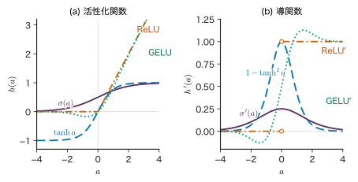
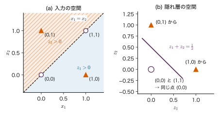
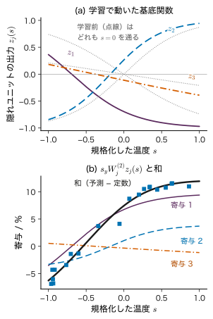
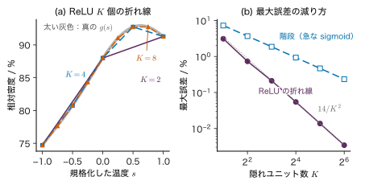

第14章ニューラルネットワークの表現 — 基底関数を学習する
- 線形の変換を何段重ねても，できることは 1 段の線形変換と変わらない．では，段と段の間に何を挟めば，曲がった決定境界や曲線を表せるようになるのか．
- 第8章の線形回帰では，Gauss 基底の中心や幅を人が先に決めていた．基底関数そのものをデータから学ぶとは，式の上で何をすることなのか．
- 「十分に大きいニューラルネットワークはどんな連続関数でも近似できる」という定理があるのに，学習がうまくいかないことがあるのはなぜか．
焼成温度と相対密度のデータ（第6章・第8章で使ったデータ A）に曲線を当てはめるとき，第8章では「多項式」や「中心を等間隔に並べた Gauss 基底」を人が選び，その重みだけを最小二乗法で決めた．基底関数の形を決めるのは人の仕事だった．入力が 1 個なら等間隔に並べればよいが，記述子が 8 個ある材料データで各軸に 5 個ずつ中心を並べると，基底関数は $5^{8}=390625$ 個になる．これでは使えない．
ニューラルネットワーク（neural network）は，この基底関数の位置・向き・傾きまでを重みとしてデータから決めるモデルである．1 個の部品（ニューロン）は「重み付き和を作り，非線形な関数に通す」だけの単純なものだが，それを並べて層にし，層を重ねると，曲がった境界も複雑な曲線も表せるようになる．本章では，ニューロンと活性化関数，層と行列の形，非線形性がなぜ必要か（XOR の手計算），基底関数を学習するモデルとしての見方，出力層と損失（どの組み合わせでも出力の誤差が $\hat{\bm{y}}-\bm{y}$ になること）を順に組み立てる．後半では万能近似定理の意味と限界，パラメーターの数と重み空間の対称性，原子ごとのエネルギーの和で全エネルギーを表すニューラルネットワークポテンシャルの考え方を扱う．重みの勾配の計算（誤差逆伝播）は次の第15章で扱い，本章は「何を表せるか」に集中する．
- ニューロンの式 $a=\bm{w}^{\tp}\bm{x}+b$，$z=h(a)$ を書き，ロジスティック回帰が 1 個のニューロンであることを説明できる．
- sigmoid，tanh，ReLU の式と導関数を書き，それぞれの特徴を述べられる．
- 層ごとの重み行列・バイアス・活性の形（次元）を表にでき，ミニバッチでは行列の積になることを示せる．
- 活性化関数が恒等写像なら何層重ねても 1 つの線形写像になることを証明し，XOR を隠れユニット 2 個で解く重みを手で確かめられる．
- 隠れ層の出力を「データに合わせて動く基底関数」として第8章の固定基底と対比できる．
- 回帰・二値分類・多クラス分類の出力層と損失を最尤推定から導き，出力の誤差がどれも $\hat{\bm{y}}-\bm{y}$ になることを導出できる．
- 万能近似定理の主張を述べ，「表せること」「学習で見つけられること」「汎化すること」が別の問題であることを例で説明できる．
- 全結合層のパラメーター数を数え，重み空間の対称性（入れ替え・符号反転・尺度）が何を意味するかを説明できる．
入門ルートで読む節：14.1，14.2，14.3，14.4，14.5，14.6，14.11．「詳しいルート」の印が付いた節は，初めて読むときは飛ばしてよい．
14.1 ニューロン — 重み付き和と活性化
14.1.1 何をしたいのか
規格化した焼成温度 $x_1$ と規格化した添加量 $x_2$ から，「焼結体が十分に緻密化するかどうか」を予測したいとする．最も単純なやり方は，2 つの入力に重みを掛けて足し，その値が大きければ「緻密化する」と判定することである．重み付き和の値はいくらでも大きく・小さくなりうるので，そのままでは確率として読めない．そこで，和を 0 と 1 の間に押し込む関数に通す．この「重み付き和を作って，ある関数に通す」という 1 個の計算単位をニューロン（neuron，ユニット unit とも呼ぶ）という（図14.1）．
14.1.2 定義と記号
定義14.1 ニューロン
入力 $\bm{x}=(x_1,\dots,x_D)^{\tp}\in\R^{D}$ に対し，重み $\bm{w}\in\R^{D}$ とバイアス $b\in\R$ を使って
\begin{equation} \begin{aligned} a&=\bm{w}^{\tp}\bm{x}+b\\ &=\sum_{i=1}^{D}w_ix_i+b,\\ z&=h(a) \end{aligned} \label{eq:14-neuron} \end{equation}を計算する単位をニューロンという．$a\in\R$ を活性（activation．重み付き和そのもの），$h:\R\to\R$ を活性化関数（activation function），$z=h(a)$ をニューロンの出力という．
記号：本章で使う文字の断り
$z$ はニューロン（隠れユニット）の出力に使う．第17・18章では同じ $z$ を潜在変数に使うが，別のものである．隠れユニットの数は $H$ と書く（第5章のエントロピー $H[p]$ とは別）．sigmoid 関数は必ず引数付きで $\sigma(a)$ と書く．同じ文字 $\sigma$ を Gauss ノイズの標準偏差にも使うが，14.6 節で両方が出てくる所では文で区別する．
$h$ を sigmoid 関数 $\sigma(a)=1/(1+e^{-a})$ にすると，出力は 0 と 1 の間に入り，$p(y=1\mid\bm{x})$ と読める．これは第9章 9.3 節のロジスティック回帰そのものである．つまり，ロジスティック回帰は「1 個のニューロン」である．同じく，$h$ を恒等写像 $h(a)=a$ にすれば，入力についての線形回帰（第8章で基底を $\phi_i(\bm{x})=x_i$ としたもの）になる．
決定境界は $\sigma(a)=1/2$，すなわち $a=\bm{w}^{\tp}\bm{x}+b=0$ の所にある．これは $\R^{D}$ の中の超平面（$D=2$ なら直線）であり，$\bm{w}$ はその法線の向きを表す．1 個のニューロンにできる分類は「超平面のどちら側か」だけである．この制約が 14.4 節の XOR の問題につながる．
例題14.1 1 個のニューロンで緻密化の確率を出す
重み $\bm{w}=(2,\,-1)^{\tp}$，バイアス $b=-0.5$，活性化関数 sigmoid のニューロンがある（数値は説明のための仮の値）．入力は規格化した焼成温度 $x_1$ と規格化した添加量 $x_2$（どちらも無次元）である．(1) $\bm{x}=(1,\,0.5)^{\tp}$ と $\bm{x}=(0,\,1)^{\tp}$ に対する $a$ と出力 $z$ を求めよ．(2) 決定境界の式を書け．
解答 (1) $\bm{x}=(1,0.5)^{\tp}$ では $a=2\times1+(-1)\times0.5+(-0.5)$ $=2-0.5-0.5=1.0$，$z=\sigma(1.0)=1/(1+e^{-1})$ $=1/1.367879=0.731$．$\bm{x}=(0,1)^{\tp}$ では $a=0-1-0.5=-1.5$，$z=1/(1+e^{1.5})=1/(1+4.481689)=0.182$．
(2) $a=0$ より $2x_1-x_2-0.5=0$，すなわち $x_2=2x_1-0.5$ の直線である．この直線の下側（$x_2\lt 2x_1-0.5$）で $z\gt 1/2$ になる．温度を上げる（$x_1$ を増やす）と緻密化しやすく，添加量を増やすと緻密化しにくい，という仮の関係を重みの符号が表している．
14.2 活性化関数 — sigmoid，tanh，ReLU
14.2.1 代表的な 3 つの関数
活性化関数は，ニューロンに「曲がり」を与える部品である．よく使われるのは次の 3 つである（図14.2）．
定義14.2 sigmoid，tanh，ReLU
\begin{align} \sigma(a)&=\frac{1}{1+e^{-a}}, \notag\\ \sigma'(a)&=\sigma(a)\bigl(1-\sigma(a)\bigr) \label{eq:14-sigmoid} \end{align} \begin{align} \tanh a&=\frac{e^{a}-e^{-a}}{e^{a}+e^{-a}}, \notag\\ (\tanh a)'&=1-\tanh^{2}a \label{eq:14-tanh} \end{align} \begin{align} \relu(a)&=\max(0,a), \notag\\ \relu'(a)&=\begin{cases}1 & a\gt0\\ 0 & a\lt0\end{cases} \label{eq:14-relu} \end{align}ReLU（rectified linear unit，正の部分だけを通す関数）は $a=0$ で微分できないが，実際の計算では $\relu'(0)=0$ と約束する．
導出：sigmoid と tanh の導関数
sigmoid：$\sigma(a)=(1+e^{-a})^{-1}$ を合成関数の微分で微分する．
\begin{align*} \sigma'(a)&=-(1+e^{-a})^{-2}\cdot(-e^{-a})\\ &=\frac{e^{-a}}{(1+e^{-a})^{2}}=\frac{1}{1+e^{-a}}\cdot\frac{e^{-a}}{1+e^{-a}}\\ &=\sigma(a)\bigl(1-\sigma(a)\bigr). \end{align*}最後の等号では $\dfrac{e^{-a}}{1+e^{-a}}=\dfrac{(1+e^{-a})-1}{1+e^{-a}}$ $=1-\sigma(a)$ を使った．
tanh：商の微分公式で，分子 $u=e^{a}-e^{-a}$，分母 $v=e^{a}+e^{-a}$ とおくと $u'=v$，$v'=u$ なので
$$ \begin{aligned} (\tanh a)'&=\frac{u'v-uv'}{v^{2}}=\frac{v^{2}-u^{2}}{v^{2}}\\ &=1-\Bigl(\frac{u}{v}\Bigr)^{2}=1-\tanh^{2}a . \end{aligned} $$どちらも「関数の値から導関数が分かる」形になっている．この性質は第15章の誤差逆伝播で，順伝播で計算した $z$ をそのまま使って $h'$ を求めるのに役立つ．
（導出終わり）

14.2.2 それぞれの性格
- sigmoid：出力が $(0,1)$ に入るので確率として読める．出力層（二値分類）に向く．隠れ層に使うと，$\abs{a}$ が大きい所で $\sigma'(a)$ がほぼ 0 になり（飽和），導関数の最大も $1/4$ と小さい．これは第15章 15.7 節の勾配消失の入口になる．
- tanh：出力が $(-1,1)$ で 0 を中心に対称（奇関数 $\tanh(-a)=-\tanh a$）．$\tanh a=2\sigma(2a)-1$ が成り立ち（演習14.2），sigmoid を平行移動・拡大したものにすぎないが，原点の傾きが 1 なので隠れ層では sigmoid より学習しやすいことが多い．やはり両端で飽和する．
- ReLU：計算が軽く，$a\gt0$ では導関数が 1 で飽和しない．深いネットワークで広く使われる．一方で $a\lt0$ では導関数が 0 なので，学習中に $a\lt0$ にとどまり続けたユニットは二度と動かない（「死んだ」ユニット）．ReLU を並べたネットワークの出力は折れ線（区分的に線形）の関数になる．この性質は 14.7 節と 14.10 節で使う．
このほかに，Transformer（第25章）などでは GELU（Gaussian error linear unit）がよく使われる．$\Phi(a)$ を標準 Gauss 分布の累積分布関数（細字の $\Phi$．計画行列の太字 $\bm{\Phi}$ とは別）として
\begin{equation} \mathrm{GELU}(a)=a\,\Phi(a) \label{eq:14-gelu} \end{equation}と定義される（Hendrycks & Gimpel）．$a$ が大きく正なら $\Phi(a)\approx1$ で $a$ をそのまま通し，大きく負なら $\Phi(a)\approx0$ で 0 にする．ReLU の折れ目を滑らかにした形で，$a\lt0$ では値がわずかに負になる（最小は $a\approx-0.75$ での約 $-0.17$．図14.2(a) の点線）．本章では名前と形の紹介にとどめる．
なぜ活性化関数は単調な関数が多いのか
ここで挙げた sigmoid，tanh，ReLU はどれも単調に増える関数である（GELU は負の側でわずかに減る所があるが，ほぼ単調）．単調であることは必須ではないが，「重み付き和が大きいほど出力も大きい」という読みやすさを保ち，損失の地形を極端に複雑にしないので好まれる．逆に，多項式のような活性化関数を使うと，次の 14.4 節で述べる「層を重ねると表せる関数が増える」性質が限られる（多項式の合成は多項式のままで，次数に上限があるネットワークでは表せる関数の集合が増えない．14.7 節の Leshno らの結果）．
例題14.2 導関数の値と飽和
(1) $a=0$ と $a=2$ での $\sigma(a)$，$\sigma'(a)$，$\tanh a$，$(\tanh a)'$，$\relu'(a)$ を求めよ．(2) $\tanh 2=2\sigma(4)-1$ を数値で確かめよ．(3) $a=-2$ での値を (1) の結果から計算せずに求めよ．
解答 (1) $a=0$：$\sigma(0)=1/2$，$\sigma'(0)=\tfrac12\cdot\tfrac12=0.25$，$\tanh0=0$，$(\tanh)'(0)=1$，$\relu'(0)=0$（約束による）．$a=2$：$\sigma(2)=1/(1+e^{-2})=1/1.135335=0.880797$，$\sigma'(2)=0.880797\times0.119203=0.104994$．$\tanh2=0.964028$，$(\tanh)'(2)=1-0.964028^{2}$ $=1-0.929350=0.070651$．$\relu'(2)=1$．$a$ が 0 から 2 へ増えるだけで，sigmoid の傾きは $0.25$ から $0.105$ へ，tanh の傾きは 1 から $0.071$ へ落ちる（飽和）が，ReLU の傾きは 1 のままである．
(2) $\sigma(4)=1/(1+e^{-4})=1/1.018316=0.982014$，$2\times0.982014-1=0.964028$ で $\tanh2$ と一致する．
(3) $\sigma(-a)=1-\sigma(a)$ より $\sigma(-2)=1-0.880797=0.119203$．$\sigma'(-2)=\sigma(-2)\{1-\sigma(-2)\}$ $=0.119203\times0.880797$ $=0.104994$（$\sigma'$ は偶関数）．$\tanh(-2)=-0.964028$（奇関数），$(\tanh)'(-2)=0.070651$（偶関数）．$\relu'(-2)=0$．
14.3 層と行列の形
14.3.1 ニューロンを並べて層にする
同じ入力 $\bm{x}$ を受け取るニューロンを $D_1$ 個並べると，$D_1$ 個の重みベクトルを行に並べた行列 $\bm{W}^{(1)}$ を使って，$D_1$ 個の活性をまとめて書ける．その出力 $\bm{z}^{(1)}$ を次の層の入力にすれば，層を重ねたネットワークになる．入力から出力へ一方向に計算が流れ，同じ層の中のニューロン同士はつながっていないものを順伝播型（feed-forward）のネットワーク，または多層パーセプトロン（multilayer perceptron，MLP）という．入力と出力の間の層を隠れ層（hidden layer），そのニューロンを隠れユニットという．
定義14.3 全結合の順伝播型ネットワーク
層を $l=1,\dots,n_{\mathrm{layer}}$ と番号付け（$n_{\mathrm{layer}}$ は層の数．層の数を $L$ と書く本も多いが，本書では $L$ を損失に使う），第 $l$ 層のユニット数を $D_l$，入力の次元を $D_0=D$ とする．$\bm{z}^{(0)}=\bm{x}$ から始めて，$l=1,\dots,n_{\mathrm{layer}}$ の順に
\begin{equation} \begin{aligned} \bm{a}^{(l)}&=\bm{W}^{(l)}\bm{z}^{(l-1)}+\bm{b}^{(l)},\\ \bm{z}^{(l)}&=h_l\bigl(\bm{a}^{(l)}\bigr) \end{aligned} \label{eq:14-layer} \end{equation}を計算する．$\bm{W}^{(l)}\in\R^{D_l\times D_{l-1}}$ を重み行列，$\bm{b}^{(l)}\in\R^{D_l}$ をバイアス，$\bm{a}^{(l)},\bm{z}^{(l)}\in\R^{D_l}$ を第 $l$ 層の活性と出力という．$h_l$ は成分ごとに働く（$\bm{z}^{(l)}$ の第 $j$ 成分は $h_l(a^{(l)}_j)$）．最後の層の出力 $\hat{\bm{y}}=\bm{z}^{(n_{\mathrm{layer}})}$ がネットワークの予測である．
$W^{(l)}_{ji}$ は「第 $l-1$ 層のユニット $i$ から第 $l$ 層のユニット $j$ へ」の重みで，行の添字が行き先，列の添字が出どころである．
この計算を入力から出力へ順にたどることを順伝播（forward propagation）という．活性化関数は層ごとに変えてよく，隠れ層は tanh や ReLU，出力層は課題に合わせて恒等・sigmoid・softmax にする（14.6 節）．本書では隠れ層の活性化関数を単に $h$ と書くことが多い．層の数え方は本によって違うが，本書では重み行列の数 $n_{\mathrm{layer}}$ を層の数とする（隠れ層 1 層のネットワークは $n_{\mathrm{layer}}=2$）．
14.3.2 2–3–1 のネットワークで形を確かめる
入力 2 個，隠れユニット 3 個，出力 1 個のネットワークを「2–3–1」と書く（図14.3）．各量の形を表14.1にまとめる．形をそろえることは，式を読むときにも，プログラムを書くときにも，最初に確かめるべきことである．
| 量 | 記号 | 形 | 意味 |
|---|---|---|---|
| 入力 | $\bm{x}=\bm{z}^{(0)}$ | $\R^{2}$ | 記述子 2 個 |
| 第 1 層の重み | $\bm{W}^{(1)}$ | $\R^{3\times2}$ | 行 $j$ が隠れユニット $j$ の重み $\bm{w}_j^{\tp}$ |
| 第 1 層のバイアス | $\bm{b}^{(1)}$ | $\R^{3}$ | |
| 隠れ層の活性・出力 | $\bm{a}^{(1)}$，$\bm{z}^{(1)}$ | $\R^{3}$ | $\bm{z}^{(1)}=h(\bm{a}^{(1)})$ |
| 第 2 層の重み | $\bm{W}^{(2)}$ | $\R^{1\times3}$ | 行ベクトル（成分 $W^{(2)}_j$） |
| 第 2 層のバイアス | $\bm{b}^{(2)}=b^{(2)}$ | $\R$ | |
| 出力 | $a^{(2)}$，$\hat{y}$ | $\R$ | 回帰なら $\hat{y}=a^{(2)}$ |
| パラメーターの数 | $3\cdot(2+1)+1\cdot(3+1)=13$ | 14.8 節 |
14.3.3 ミニバッチでは行列になる
学習では，$B$ 個のデータ（ミニバッチ．第7章 7.5 節）をまとめて計算する．$B$ 個の入力を列に並べた行列 $\bm{Z}^{(0)}=(\bm{x}_1,\dots,\bm{x}_B)\in\R^{D_0\times B}$ を作ると，式 \eqref{eq:14-layer} は $B$ 個まとめて
\begin{equation} \begin{aligned} \bm{A}^{(l)}&=\bm{W}^{(l)}\bm{Z}^{(l-1)}+\bm{b}^{(l)}\bm{1}_B^{\tp},\\ \bm{Z}^{(l)}&=h\bigl(\bm{A}^{(l)}\bigr) \end{aligned} \label{eq:14-batch} \end{equation}と書ける．$\bm{A}^{(l)},\bm{Z}^{(l)}\in\R^{D_l\times B}$ で，第 $n$ 列が $n$ 番目のデータの $\bm{a}^{(l)}$，$\bm{z}^{(l)}$ である．$\bm{1}_B\in\R^{B}$ は成分がすべて 1 のベクトルで，$\bm{b}^{(l)}\bm{1}_B^{\tp}$ は同じバイアスを $B$ 列ぶん並べた $D_l\times B$ 行列である．1 層の計算は $D_l\times D_{l-1}$ 行列と $D_{l-1}\times B$ 行列の積 1 回（掛け算 $D_lD_{l-1}B$ 回）になる．行列の積は計算機が最も速く実行できる演算の 1 つなので，ニューラルネットワークの計算はこの形にまとめて行う．
記号：データを行に並べる流儀
多くのプログラミング用のライブラリーや，本書の第24〜26章（Attention・Transformer）では，データを行に並べた行列 $\bm{X}\in\R^{B\times D}$ を使い，$\bm{A}=\bm{X}\bm{W}^{\tp}+\bm{1}_B\bm{b}^{\tp}$ と右から重みを掛ける．式 \eqref{eq:14-batch} 全体を転置したものであり，中身は同じである．どちらの流儀かは，行列の形を見れば判断できる．
例題14.3 2–3–1 のネットワークの順伝播（ミニバッチ 2 個）
隠れ層の活性化関数を ReLU，出力層を恒等写像とし，
$$ \bm{W}^{(1)}=\begin{pmatrix}1&0\\0.5&-1\\-1&1\end{pmatrix},\quad \bm{b}^{(1)}=\begin{pmatrix}0\\0.5\\0\end{pmatrix}, $$ $$ \bm{W}^{(2)}=\begin{pmatrix}1&-2&0.5\end{pmatrix},\quad b^{(2)}=0.1 $$とする．2 個の入力 $\bm{x}_1=(2,1)^{\tp}$，$\bm{x}_2=(0,1)^{\tp}$ を列に並べて，式 \eqref{eq:14-batch} で $\bm{A}^{(1)}$，$\bm{Z}^{(1)}$，$\bm{A}^{(2)}$ を求めよ．
解答 $\bm{Z}^{(0)}=\begin{pmatrix}2&0\\1&1\end{pmatrix}\in\R^{2\times2}$ である．$\bm{W}^{(1)}\bm{Z}^{(0)}$ の各成分は「$\bm{W}^{(1)}$ の行」と「$\bm{Z}^{(0)}$ の列」の内積なので，
$$ \begin{aligned} \bm{W}^{(1)}\bm{Z}^{(0)}&=\begin{pmatrix}1\cdot2+0\cdot1 & 1\cdot0+0\cdot1\\ 0.5\cdot2-1\cdot1 & 0.5\cdot0-1\cdot1\\ -1\cdot2+1\cdot1 & -1\cdot0+1\cdot1\end{pmatrix}\\ &=\begin{pmatrix}2&0\\0&-1\\-1&1\end{pmatrix}. \end{aligned} $$バイアスを各列に足すと $\bm{A}^{(1)}=\begin{pmatrix}2&0\\0.5&-0.5\\-1&1\end{pmatrix}$．ReLU は負の成分を 0 にするので $\bm{Z}^{(1)}=\begin{pmatrix}2&0\\0.5&0\\0&1\end{pmatrix}$．出力は
$$ \begin{aligned} \bm{A}^{(2)}&=\begin{pmatrix}1&-2&0.5\end{pmatrix}\bm{Z}^{(1)}+0.1\,\bm{1}_2^{\tp}\\ &=\begin{pmatrix}2-1+0+0.1 & 0+0+0.5+0.1\end{pmatrix}\\ &=\begin{pmatrix}1.1&0.6\end{pmatrix}. \end{aligned} $$形は $\bm{A}^{(1)},\bm{Z}^{(1)}\in\R^{3\times2}$，$\bm{A}^{(2)}\in\R^{1\times2}$ で，列がそれぞれのデータに対応する．$\bm{x}_1$ では隠れユニット 3 が，$\bm{x}_2$ では隠れユニット 1 と 2 が「切れて」（出力 0）いる．どのユニットが働くかが入力ごとに変わることが，ReLU のネットワークが折れ線を作る仕組みである．
14.4 非線形性がなぜ必要か — 線形の積み重ねと XOR
14.4.1 線形の層は何層重ねても 1 層
層を重ねればモデルが強くなる，と考えたくなる．ところが，活性化関数が恒等写像（$h(a)=a$）なら，何層重ねても何も増えない．
定理14.1 線形の層の合成は 1 つの線形写像（アフィン写像）
すべての層の活性化関数が恒等写像なら，$n_{\mathrm{layer}}$ 層のネットワークの出力は，ある行列 $\bm{W}\in\R^{D_{n_{\mathrm{layer}}}\times D_0}$ とベクトル $\bm{b}\in\R^{D_{n_{\mathrm{layer}}}}$ を使って $\hat{\bm{y}}=\bm{W}\bm{x}+\bm{b}$ と書ける．
証明
層の数についての数学的帰納法で示す．層が $k$ 個（$k=1,\dots,n_{\mathrm{layer}}$）のところまでの出力 $\bm{z}^{(k)}$ が，$\bm{x}$ のアフィン写像で書けることを示せばよい．$k=1$ では $\bm{z}^{(1)}=\bm{W}^{(1)}\bm{x}+\bm{b}^{(1)}$ なので成り立つ．$k-1$ 層までの出力が $\bm{z}^{(k-1)}=\bm{W}'\bm{x}+\bm{b}'$（$\bm{W}'\in\R^{D_{k-1}\times D_0}$，$\bm{b}'\in\R^{D_{k-1}}$）と書けたとする．第 $k$ 層も恒等写像なので
\begin{align} \bm{z}^{(k)}&=\bm{W}^{(k)}\bm{z}^{(k-1)}+\bm{b}^{(k)} \notag\\ &=\bm{W}^{(k)}\bigl(\bm{W}'\bm{x}+\bm{b}'\bigr) \notag\\ &\quad+\bm{b}^{(k)} \notag\\ &=\bigl(\bm{W}^{(k)}\bm{W}'\bigr)\bm{x} \notag\\ &\quad+\bigl(\bm{W}^{(k)}\bm{b}'+\bm{b}^{(k)}\bigr) \label{eq:14-collapse} \end{align}となる．$\bm{W}^{(k)}\bm{W}'$ は $D_k\times D_{k-1}$ と $D_{k-1}\times D_0$ の積なので $D_k\times D_0$ 行列，$\bm{W}^{(k)}\bm{b}'+\bm{b}^{(k)}\in\R^{D_k}$ である．よって $k$ 層でも成り立つ．$k=n_{\mathrm{layer}}$ とおき，$\bm{W}=\bm{W}^{(n_{\mathrm{layer}})}\bm{W}'$，$\bm{b}=\bm{W}^{(n_{\mathrm{layer}})}\bm{b}'+\bm{b}^{(n_{\mathrm{layer}})}$ とすれば $\hat{\bm{y}}=\bm{z}^{(n_{\mathrm{layer}})}=\bm{W}\bm{x}+\bm{b}$ である．
（証明終わり）
行列の積は線形写像の合成である（大学数学 第11章 11.4）．線形写像を何回合成しても線形写像なので，層を重ねて得られるのは 1 層のときと同じ関数の集まりである．むしろ，途中の層の幅が狭いと，合成した行列 $\bm{W}$ の階数がその幅で抑えられ，表せるものが減ることさえある（演習14.8）．非線形な活性化関数を挟むことで，初めて合成が「新しい関数」を生む．
14.4.2 1 個のニューロンでは XOR を分けられない
非線形性が必要な最も小さな例が XOR（排他的論理和）である．入力 $(x_1,x_2)\in\{0,1\}^{2}$ に対し，2 つの値が異なるとき $y=1$，同じとき $y=0$ とする：
$$ \begin{aligned} &(0,0)\mapsto0,\qquad (1,0)\mapsto1,\\ &(0,1)\mapsto1,\qquad (1,1)\mapsto0 . \end{aligned} $$正方形の対角にある 2 点ずつが同じクラスなので，1 本の直線では分けられない．このことを式で確かめる．1 個のニューロン（ロジスティック回帰）で分けられるとすると，$f(\bm{x})=w_1x_1+w_2x_2+b$ が $y=1$ の点で正，$y=0$ の点で負になるはずである：
\begin{equation} \begin{aligned} b&\lt0, & w_1+b&\gt0,\\ w_2+b&\gt0, & w_1+w_2+b&\lt0 . \end{aligned} \label{eq:14-xor-ineq} \end{equation}2 番目と 3 番目を足すと $w_1+w_2+2b\gt0$．1 番目と 4 番目を足すと $w_1+w_2+2b\lt0$．両方が同時に成り立つことはないので矛盾である．したがって，XOR を正しく分ける $w_1,w_2,b$ は存在しない．XOR が 1 層のパーセプトロンで扱えないことは，Minsky & Papert (1969) の本で広く知られるようになった．
14.4.3 隠れユニット 2 個で XOR を解く
隠れ層を 1 層挟めば XOR は解ける．発想は「入力を，直線で分けられる配置へ写してから分ける」ことである．ここでは ReLU の隠れユニットを 2 個使い，
- 隠れユニット 1：$z_1=\relu(x_1-x_2)$（$x_1$ が $x_2$ より大きいときだけ正）
- 隠れユニット 2：$z_2=\relu(x_2-x_1)$（$x_2$ が $x_1$ より大きいときだけ正）
とする．$z_1+z_2=\abs{x_1-x_2}$ なので，「2 つの入力が違うかどうか」が $z_1+z_2$ に現れる．出力層で $a^{(2)}=6(z_1+z_2)-3$，$\hat{y}=\sigma(a^{(2)})$ とすれば，$z_1+z_2=1$ で $\hat{y}=\sigma(3)$，$z_1+z_2=0$ で $\hat{y}=\sigma(-3)$ になる．式 \eqref{eq:14-layer} の形で書けば
$$ \bm{W}^{(1)}=\begin{pmatrix}1&-1\\-1&1\end{pmatrix},\quad \bm{b}^{(1)}=\begin{pmatrix}0\\0\end{pmatrix}, $$ $$ \bm{W}^{(2)}=\begin{pmatrix}6&6\end{pmatrix},\quad b^{(2)}=-3 $$である．
例題14.4 XOR の 4 点を手で計算する
上の重みで 4 点すべての $\bm{z}^{(1)}$，$a^{(2)}$，$\hat{y}$ と，交差エントロピー損失 $\ell=-\{y\ln\hat{y}+(1-y)\ln(1-\hat{y})\}$ を求め，4 点とも正しく分類されることを確かめよ．
解答 $\bm{a}^{(1)}=(x_1-x_2,\;x_2-x_1)^{\tp}$ を計算して ReLU に通す．
| $(x_1,x_2)$ | $y$ | $\bm{a}^{(1)}$ | $\bm{z}^{(1)}$ | $a^{(2)}=6(z_1+z_2)-3$ | $\hat{y}=\sigma(a^{(2)})$ | $\ell$ |
|---|---|---|---|---|---|---|
| $(0,0)$ | 0 | $(0,0)$ | $(0,0)$ | $-3$ | $0.0474$ | $0.0486$ |
| $(1,0)$ | 1 | $(1,-1)$ | $(1,0)$ | $3$ | $0.9526$ | $0.0486$ |
| $(0,1)$ | 1 | $(-1,1)$ | $(0,1)$ | $3$ | $0.9526$ | $0.0486$ |
| $(1,1)$ | 0 | $(0,0)$ | $(0,0)$ | $-3$ | $0.0474$ | $0.0486$ |
$\sigma(3)=1/(1+e^{-3})=1/1.049787=0.952574$，$\sigma(-3)=1-\sigma(3)=0.047426$．$y=1$ の点では $\ell=-\ln0.952574=0.048587$，$y=0$ の点では $\ell=-\ln(1-0.047426)$ $=-\ln0.952574=0.048587$ で，4 点とも同じ損失になる．しきい値 $1/2$ で判定すると 4 点とも正しい．
要点は第 2 列と第 4 列の比較にある．(0,0) と (1,1) は入力の空間では対角の反対側にあるが，隠れ層では同じ点 (0,0) に写る．(1,0) と (0,1) は $(1,0)$ と $(0,1)$ に写る．隠れ層の空間では，直線 $z_1+z_2=1/2$ で 2 クラスが分かれる（図14.4）．出力層のニューロンは，この「写した後の空間」で 1 本の直線を引いているだけである．

手計算の重みは人が考えたものである．同じ 2 個の隠れユニットでも，勾配降下法による学習がいつもこの答えにたどり着くとは限らない．次のシミュレーターで確かめる．
シミュレーター14.1 XOR を学習させる（隠れユニット数を変える）
隠れ層 1 層のネットワークに XOR の配置の点を学習させ，隠れユニット数 $H$ によって分けられるかどうかがどう変わるかを見る装置である．ここでの XOR は，中心 $(\pm0.5,\pm0.5)$ の 4 つの群れ（各座標に標準偏差 0.2 の Gauss ノイズ，教育用の合成データ）で，$x_1x_2\gt0$ の象限（右上と左下）が $y=1$ である．上の手計算の 4 点 $\{0,1\}^{2}$ を $(0.5,0.5)$ だけずらすと中心の配置は同じになるが，ラベルは逆になる（手計算では $(x_1-0.5)(x_2-0.5)\lt0$ の 2 点が $y=1$）．「対角の群れが同じクラス」という構造は同じである．隠れ層は tanh，出力層は sigmoid と交差エントロピーで，ミニバッチの勾配降下法で学習する（モーメンタムなどは使わない簡略化した装置）．
操作と観察
- 「課題」を「XOR」にし，「隠れユニット数 H」を 2 にする（ほかは既定のまま：活性化関数 tanh，学習率 0.10，ミニバッチ 8，重み減衰 0，初期値「乱数（Xavier／He）」，訓練データ数 100，2 つの seed は 20261112）．「実行」を押し，エポックが 1000 前後になったら止める → 読み出しの「正解率 訓練／検証」が 75.0 % ／ 73.5 % 前後で頭打ちになり，検証損失は約 0.369 である．上の図では，右上の群れ（$y=1$）が $\hat{y}\approx0.49$ の白っぽい領域に入り，誤って分類されている．1 個のニューロンでは表せない（式 \eqref{eq:14-xor-ineq}）が，例題14.4 のとおり隠れユニット 2 個なら表せる重みが存在するのに，学習では見つからなかった例である．
- $H$ を 1 にする（学習は最初からやり直しになる）．「実行」で 2000 エポックまで進める → 正解率は 73.0 % ／ 70.5 % にとどまる．隠れユニット 1 個では原理的に XOR を分けられない（演習14.4）．
- $H$ を 4 にして「実行」→ 300 エポックで正解率 100.0 % ／ 99.5 % になる．700 エポックを過ぎると「検証損失の最小（エポック）」が 0.0230（696）と表示される．
- $H$ を 2 に戻し，乱数の seed の「seed を変える」を押す（seed が 20261113 になり，最初からやり直す）．「実行」で 1000 エポックまで進める → 正解率は 98.0 % ／ 91.0 % になり，今度は XOR の形が学習される．同じ構造でも，初期値（乱数の seed）しだいで行き着く先が変わる．
操作後の問い
- 手順 1 で正解率が 75 % で止まるのはなぜか．4 つの群れのうちいくつが正しく分類されているか．
答えの例
4 つの群れのうち 3 つ（左上・左下・右下）は正しく，右上の 1 つが誤っているので約 75 % になる．このとき学習した 2 個の隠れユニットは，左上 $(-0.5,0.5)$ と右上 $(0.5,0.5)$ の群れの中心をどちらもほぼ $(z_1,z_2)\approx(1,-1)$ という同じ点に写している（tanh が両端で飽和している）．隠れ層で同じ点に写った入力は出力層でも区別できないので，ラベルの違う 2 つの群れに同じ $\hat{y}\approx0.49$ が出る．勾配も小さく，抜け出しにくい．
- 手順 2 と例題14.4 から，「隠れユニット 2 個で XOR を表せる」ことと「学習で見つけられる」ことの関係をまとめよ．
答えの例
隠れユニット 1 個では，どんな重みを選んでも XOR を表せない（表現力の不足）．2 個なら表せる重みが存在する（例題14.4）が，勾配降下法は初期値の近くの谷に落ちるだけなので，seed によっては 75 % の局所的な解に留まる．4 個にすると表せる重みの組が大幅に増え，学習で見つけやすくなる．「表せる」は存在の話，「見つけられる」は最適化の話で，別の問題である（14.7 節）．
- 手順 4 で，seed を 20261112 から 20261131 まで 20 通り変えて $H=2$ で 1000 エポック学習させると，訓練の正解率が 80 % に届かないものが 5 通りある．この結果から，ネットワークの性能を報告するときに注意すべきことを述べよ．
答えの例
1 回の学習の結果は初期値の運に左右されるので，1 つの seed の結果だけで「この構造は使える／使えない」と判断してはいけない．複数の seed で学習して結果のばらつき（中央値と範囲など）を示すか，隠れユニットを増やすなどして初期値に左右されにくくする．比べるときは検証データで行う．
14.5 基底関数を学習するモデル
14.5.1 固定した基底と，動く基底
第8章 8.1 節の線形回帰では，基底関数 $\phi_j(\bm{x})$（$j=1,\dots,M$）を先に決め，
\begin{equation} f(\bm{x};\bm{w})=\sum_{j=1}^{M}w_j\phi_j(\bm{x})+w_0 \label{eq:14-fixed-basis} \end{equation}の重み $w_j$ だけを学習した．たとえば Gauss 基底 $\phi_j(x)=\exp\{-(x-\mu_j)^{2}/(2s^{2})\}$ の中心 $\mu_j$ と幅 $s$ は人が決める．$f$ は $\bm{w}$ について線形なので，二乗誤差の最小化は正規方程式という連立 1 次方程式で解け，損失は $\bm{w}$ について凸（第7章 7.4 節）であった．
隠れ層 1 層のネットワークで出力層を恒等写像にすると，出力は
\begin{equation} \begin{aligned} f(\bm{x};\bm{\theta})={}&\sum_{j=1}^{H}W^{(2)}_j\,h\bigl(\bm{w}_j^{\tp}\bm{x}+b^{(1)}_j\bigr)\\ &+b^{(2)} \end{aligned} \label{eq:14-nn-basis} \end{equation}である．$\bm{w}_j^{\tp}$ は $\bm{W}^{(1)}$ の第 $j$ 行，$\bm{\theta}$ はすべての重みとバイアスをまとめたものである．式 \eqref{eq:14-fixed-basis} と並べると，$h(\bm{w}_j^{\tp}\bm{x}+b^{(1)}_j)$ が基底関数 $\phi_j(\bm{x})$ の役，$W^{(2)}_j$ がその係数 $w_j$ の役，$b^{(2)}$ が $w_0$ の役をしている．違いは，基底関数の中の $\bm{w}_j$ と $b^{(1)}_j$ も学習する点にある．ニューラルネットワークは「データに合わせて動く基底関数」を持つ線形モデル，と読める．
| 固定基底の線形モデル | 隠れ層 1 層のネットワーク | |
|---|---|---|
| 基底関数 | $\phi_j(\bm{x})$（人が決める） | $h(\bm{w}_j^{\tp}\bm{x}+b^{(1)}_j)$（学習する） |
| 学習するもの | 係数 $w_j$ だけ | 係数 $W^{(2)}_j$ と基底の形 $\bm{w}_j$，$b^{(1)}_j$ |
| パラメーターについて | 線形 | 非線形 |
| 二乗誤差の損失 | 凸．正規方程式で解ける | 非凸．勾配法で反復（局所解あり） |
| 入力次元 $D$ が増えると | 格子に並べると基底の数が $D$ について指数的に増える | ユニット 1 個あたり $D+2$ 個のパラメーター |
14.5.2 1 個の tanh ユニットは「位置と幅を持つ段差」
入力が 1 次元（$x=s$）のとき，tanh の隠れユニット $z_j(s)=\tanh(w_js+b_j)$（$w_j\ne0$）は，$a=w_js+b_j=0$ となる点
$$ s_j^{\ast}=-\frac{b_j}{w_j} $$を中心に $-1$ から $+1$ へ（$w_j\lt0$ なら $+1$ から $-1$ へ）なめらかに変わる段差である．中心での傾きは $w_j$ で，$\abs{a}\le1$ となる遷移の幅は $2/\abs{w_j}$ である．つまり，バイアス $b_j$ と重み $w_j$ を学習することは，段差の位置と鋭さを学習することにあたる．入力が $D$ 次元なら，$z_j(\bm{x})=\tanh(\bm{w}_j^{\tp}\bm{x}+b_j)$ は超平面 $\bm{w}_j^{\tp}\bm{x}+b_j=0$ を境に，法線 $\bm{w}_j$ の向きにだけ変わる「尾根」のような関数（ridge function）になる．$\bm{w}_j$ の向きも学習するので，どの方向の変化を拾うかもデータが決める．
例題14.5 段差の位置を焼成温度に直す
データ A の入力は規格化した温度 $s=(T-1300\ ^{\circ}\mathrm{C})/(200\ ^{\circ}\mathrm{C})$ である．(1) 隠れユニット $z(s)=\tanh(4s-2)$ の段差の中心と，$\abs{a}\le1$ となる遷移の範囲を温度 $T$ で答えよ．(2) 入力が 8 次元のとき，各軸に Gauss 基底の中心を 5 個ずつ格子状に並べる固定基底モデルの基底の数と，隠れユニット 50 個のネットワーク（出力 1 個）のパラメーター数を比べよ．
解答 (1) 中心は $4s-2=0$ より $s=0.5$，$T=1300+200\times0.5=1400\ ^{\circ}\mathrm{C}$．$\abs{4s-2}\le1$ は $1\le4s\le3$，すなわち $0.25\le s\le0.75$ で，$T=1350$〜$1450\ ^{\circ}\mathrm{C}$ である．この範囲の外では $z$ はほぼ $\pm1$ に張り付く（$\tanh1=0.76$，$\tanh2=0.96$）．
(2) 格子の基底は $5^{8}=390625$ 個（係数も同じ数）．入力 1 次元なら 5 個，2 次元で 25 個，3 次元で 125 個と，次元について指数的に増える．ネットワークは $\bm{W}^{(1)}\in\R^{50\times8}$ と $\bm{b}^{(1)}\in\R^{50}$ で $50\times(8+1)=450$ 個，出力層が $50+1=51$ 個，合わせて 501 個である．ネットワークの基底は格子に縛られず，データのある所・変化のある方向に置かれる．ただし，その置き場所を勾配法で探す必要があり，見つかる保証はない（14.7 節）．
14.5.3 学習で基底が動く様子
次のシミュレーターでは，データ A（教育用の合成データ）の 20 点に隠れユニット 3 個の tanh のネットワークを学習させ，各隠れユニットの出力 $z_j(s)$ と，それに係数を掛けた寄与を描く．回帰の目標値は訓練データの平均 $\bar{y}$ と標準偏差 $s_y$ で標準化して学習しているので，予測を % に戻した式は
$$ \hat{y}(s)=\underbrace{\bar{y}+s_y\,b^{(2)}}_{\text{定数}}+\sum_{j=1}^{H}\underbrace{s_y\,W^{(2)}_j\,z_j(s)}_{\text{寄与 } j} $$である．既定の設定では $\bar{y}=85.14\ \%$，$s_y=7.15\ \%$ になる．図14.5 は，この装置と同じ設定・同じ seed で 2000 エポック学習した結果である．

学習前は，バイアスの初期値が 0 なので 3 個の段差の中心 $s_j^{\ast}=-b_j/w_j$ はどれも $s=0$ にある．学習後は，中心がそれぞれ $s\approx-0.69$，$-0.18$，$-0.38$（$T\approx1161$，$1264$，$1223\ ^{\circ}\mathrm{C}$）に移り，傾きも変わった．3 番目のユニットは傾き $\abs{w_3}\approx0.30$ と小さいので，$[-1,1]$ の範囲ではほぼ直線として働いている．データ A の曲線は低温側で急に上がり高温側で頭打ちになるので，段差が低温側に集まったのは理にかなっている．
シミュレーター14.2 隠れユニットの出力を「動く基底関数」として見る
データ A の回帰で，隠れユニットの出力 $z_j(s)$ と寄与 $s_yW^{(2)}_jz_j(s)$ が学習とともにどう動くかを見る装置である．隠れ層 1 層・出力 1 個で，素朴なミニバッチ勾配降下法だけを使う（目標値は訓練データの平均と標準偏差で標準化して学習する）．
操作と観察
- 既定のまま（課題「回帰（データ A）」，H = 3，tanh，学習率 0.10，ミニバッチ 8，訓練データ数 20，2 つの seed は 20261112．シミュレーター14.1 を操作した後なら「課題」を戻し，seed を「既定に戻す」）で，まだ「実行」を押さずに一番下の図（「下の図に描くもの」が zj(s)）を見る → 3 本の曲線がどれも $s=0$ で 0 を通る．バイアスの初期値が 0 だからである．
- 「実行」を押し，2000 エポック前後で止める → 3 本の曲線の中心と傾きが動き（図14.5(a)），上の図の予測曲線がデータに沿う．「RMSE 訓練／検証」は 0.927 ／ 1.239 % 前後で，ノイズの標準偏差 1 % と同じ程度である．式 \eqref{eq:14-nn-basis} の基底 $h(\bm{w}_j^{\tp}\bm{x}+b_j)$ が学習で動いたことを確かめる．
- 「下の図に描くもの」を「寄与」に切り替える → 3 本の寄与（単位 %）を足して定数（約 81.20 %）を加えると，上の図の予測曲線になる．たとえば $s=0.5$（1400 °C）では寄与が約 $8.72$，$3.02$，$-0.76\ \%$ で，予測は $81.20+8.72+3.02-0.76\approx92.17\ \%$（真の値 92.74 %）．
- H を 1，8 に変えてそれぞれ 2000 エポックまで学習させる → RMSE 訓練／検証は $H=1$ で 0.945 ／ 1.240 %，$H=8$ で 0.919 ／ 1.215 % で，$H=3$ とほとんど変わらない．
操作後の問い
- 手順 4 で，隠れユニットを 8 個に増やしても検証 RMSE がほとんど改善しないのはなぜか．
答えの例
データ A の真の関数はなめらかで，隠れユニット 1 個の段差でもノイズ（標準偏差 1 %）の大きさまで近似できてしまうからである．残っている誤差の大部分は観測ノイズで，モデルを柔軟にしても減らせない（第6章のバイアス–分散分解）．表せる形が増えることと，予測が良くなることは別である．
- 図の手順 3 の「定数」とは何か．寄与をすべて足したものが予測曲線から定数だけずれるのはなぜか．
答えの例
定数は $\bar{y}+s_yb^{(2)}$ で，出力層のバイアスを % に戻したものと，標準化で引いた平均である．予測は「定数＋寄与の和」なので，寄与の和だけでは定数の分だけずれる．固定基底モデルの切片 $w_0$ と同じ役である．
- この装置の結果を，第8章の Gauss 基底（中心を等間隔に固定）による回帰と比べると，ネットワークの利点と欠点は何か．
答えの例
利点：基底の位置と幅を学習するので，少ない基底（ここでは 3 個）でデータの変化のある所に合わせられ，入力が多次元でも格子状に基底を並べなくてよい．欠点：損失が非凸になり，正規方程式のような一発の解法がなく，初期値と学習率に結果が左右される．データ A のように 1 次元で 20 点しかない問題では，固定基底やガウス過程（第12章）のほうが扱いやすく，不確かさも出せる．
14.6 出力層と損失 — 誤差はいつも ŷ − y
14.6.1 課題で出力層を選ぶ
隠れ層は課題によらず同じように作れるが，出力層の活性化関数と損失は課題で決まる．どれも「出力を確率分布のパラメーターと読み，その分布でのデータの負の対数尤度を損失にする」という同じ考え（最尤推定．第4章 4.2 節）から出てくる．以下，最後の層の活性を $\bm{a}=\bm{a}^{(n_{\mathrm{layer}})}$，出力を $\hat{\bm{y}}$，1 個のデータの損失を $\ell$ と書き，出力層の誤差を
$$ \bm{\delta}^{(n_{\mathrm{layer}})}\equiv\pdiff{\ell}{\bm{a}^{(n_{\mathrm{layer}})}}\quad(\text{成分 }\delta_k=\partial\ell/\partial a_k) $$と定義する．第15章ではこの $\bm{\delta}$ を出力から入力へ向かって順に配っていく．
| 課題 | 出力の確率モデル | 出力層 | 損失 $\ell$ | $\bm{\delta}^{(n_{\mathrm{layer}})}$ |
|---|---|---|---|---|
| 回帰 | $p(y\mid\bm{x})=\Normal(y\mid\hat{y},\sigma^{2})$ | 恒等 $\hat{y}=a$ | $\tfrac12(\hat{y}-y)^{2}$ | $\hat{y}-y$ |
| 二値分類 | Bernoulli：$p(y=1\mid\bm{x})=\hat{y}$ | $\hat{y}=\sigma(a)$ | $-y\ln\hat{y}-(1-y)\ln(1-\hat{y})$ | $\hat{y}-y$ |
| $K$ クラス分類 | カテゴリカル：$p(y_k=1\mid\bm{x})=\hat{y}_k$ | $\hat{\bm{y}}=\softmax(\bm{a})$ | $-\sum_k y_k\ln\hat{y}_k$ | $\hat{\bm{y}}-\bm{y}$ |
14.6.2 回帰：恒等写像と二乗和
目標値が $y=f(\bm{x};\bm{\theta})+\varepsilon$，$\varepsilon\sim\Normal(0,\sigma^{2})$（ここの $\sigma$ はノイズの標準偏差で，sigmoid ではない）と考えると，1 個のデータの負の対数尤度は
$$ \begin{aligned} -\ln\Normal(y\mid\hat{y},\sigma^{2})&=\frac{1}{2\sigma^{2}}(\hat{y}-y)^{2}+\frac12\ln(2\pi\sigma^{2}),\\ \hat{y}&=f(\bm{x};\bm{\theta}) \end{aligned} $$である．$\sigma^{2}$ を固定すれば，$\bm{\theta}$ に関係するのは第 1 項だけで，正の定数 $1/\sigma^{2}$ を除けば $\ell=\tfrac12(\hat{y}-y)^{2}$ になる．出力層は恒等写像 $\hat{y}=a$ にする（目標値は実数全体をとりうるので，範囲を制限しない）．
\begin{equation} \delta=\pdiff{\ell}{a}=a-y=\hat{y}-y . \label{eq:14-delta-reg} \end{equation}14.6.3 二値分類：sigmoid と交差エントロピー
$y\in\{0,1\}$ を Bernoulli 分布 $p(y\mid\bm{x})=\hat{y}^{\,y}(1-\hat{y})^{1-y}$ でモデル化する．負の対数尤度は
$$ \ell=-\ln p(y\mid\bm{x})=-y\ln\hat{y}-(1-y)\ln(1-\hat{y}) $$で，交差エントロピー（第5章 5.5 節）になる．$\hat{y}$ は 0 と 1 の間になければならないので，出力層は $\hat{y}=\sigma(a)$ とする．$a$ で微分する：
\begin{align} \pdiff{\ell}{a}&=\Bigl(-\frac{y}{\hat{y}}+\frac{1-y}{1-\hat{y}}\Bigr)\diff{\hat{y}}{a} \notag\\ &=\Bigl(-\frac{y}{\hat{y}}+\frac{1-y}{1-\hat{y}}\Bigr)\hat{y}(1-\hat{y}) \notag\\ &=-y(1-\hat{y})+(1-y)\hat{y} \notag\\ &=\hat{y}-y . \label{eq:14-delta-bin} \end{align}2 行目では式 \eqref{eq:14-sigmoid} の $\sigma'(a)=\sigma(a)\{1-\sigma(a)\}$ を使った．3・4 行目の展開は $-y+y\hat{y}+\hat{y}-y\hat{y}=\hat{y}-y$ である．sigmoid の導関数 $\hat{y}(1-\hat{y})$ が，交差エントロピーの分母とちょうど打ち消し合っている．
数値計算では，$\hat{y}$ が 0 や 1 に丸められて $\ln0$ になるのを避けるため，$\ell$ を $a$ で直接書いた形 $\ell=\ln(1+e^{a})-ya$ を使う（$\ln(1+e^{a})$ は $a$ が大きいとき $a+\ln(1+e^{-a})$ と変形して桁あふれを防ぐ）．
14.6.4 多クラス分類：softmax と交差エントロピー
$K$ クラスのラベルを one-hot ベクトル $\bm{y}\in\{0,1\}^{K}$（正解のクラスの成分だけ 1）で表す．出力層は softmax
$$ \hat{y}_k=\softmax(\bm{a})_k=\frac{e^{a_k}}{\sum_{j=1}^{K}e^{a_j}}\qquad(k=1,\dots,K) $$とし，$\hat{y}_k\gt0$，$\sum_k\hat{y}_k=1$ を満たすようにする．カテゴリカル分布の負の対数尤度は $\ell=-\sum_k y_k\ln\hat{y}_k$ である．$\ln\hat{y}_k=a_k-\ln\sum_j e^{a_j}$ なので，$a_m$ で微分すると
$$ \pdiff{\ln\hat{y}_k}{a_m}=\delta_{km}-\frac{e^{a_m}}{\sum_j e^{a_j}}=\delta_{km}-\hat{y}_m $$（$\delta_{km}$ は Kronecker のデルタ：$k=m$ なら 1，それ以外は 0．誤差の $\bm{\delta}$ とは別）．したがって
\begin{align} \pdiff{\ell}{a_m}&=-\sum_{k=1}^{K}y_k\bigl(\delta_{km}-\hat{y}_m\bigr) \notag\\ &=-y_m+\hat{y}_m\sum_{k=1}^{K}y_k \notag\\ &=\hat{y}_m-y_m \label{eq:14-delta-soft} \end{align}となる．最後に one-hot の性質 $\sum_k y_k=1$ を使った．softmax の計算は $\max_j a_j$ を全成分から引いてから指数をとり（log-sum-exp の工夫．第9章 9.5 節），桁あふれを防ぐ．
（恒等＋二乗和/2，sigmoid＋交差エントロピー，softmax＋交差エントロピーのいずれでも成り立つ）
3 つの組み合わせでは，出力層の誤差が「予測 − 正解」という同じ形になる．これは偶然ではなく，どれも指数型分布族（第3章 3.11 節）の自然パラメーターを $a$ にとった組み合わせ（正準連結関数）になっているためである．逆に，sigmoid の出力に二乗誤差を組み合わせると，$\delta=(\hat{y}-y)\hat{y}(1-\hat{y})$ となって，予測が大きく外れて飽和したときに誤差が小さくなってしまう（演習14.3）．
14.6.5 ミニバッチの損失と重み減衰の規約
本書の第14・15章とシミュレーター S05 では，ミニバッチ $\mathcal{B}$（データの番号の集合，大きさ $B=\abs{\mathcal{B}}$）の損失を平均で書き，重み減衰（第6章 6.6 節の正則化）を足す：
\begin{equation} \begin{aligned} L(\bm{\theta})={}&\frac{1}{B}\sum_{n\in\mathcal{B}}\ell_n\\ &+\frac{\lambda}{2}\sum_{l=1}^{n_{\mathrm{layer}}}\norm{\bm{W}^{(l)}}^{2} \end{aligned} \label{eq:14-loss-mean} \end{equation}$\ell_n$ は $n$ 番目のデータの損失，$\norm{\bm{W}^{(l)}}^{2}$ は行列の全成分の 2 乗の和である．重み減衰はバイアスには掛けない（バイアスは出力の平行移動にすぎず，小さくする理由がない）．第8・9章では損失を和で書いたので，同じ $\lambda$ でも効き方が $B$ 倍（全データなら $N$ 倍）違う．文献やソフトウェアの $\lambda$ を比べるときは，平均か和かを確かめる必要がある．平均で書くと，学習率 $\eta$ の適切な大きさがデータ数にあまり依存しない利点がある（第7章 7.5 節）．
例題14.6 3 クラスの softmax の誤差
出力層の活性が $\bm{a}=(2,\,1,\,0)^{\tp}$，正解がクラス 1（$\bm{y}=(1,0,0)^{\tp}$）のとき，(1) $\hat{\bm{y}}$，(2) 損失 $\ell$，(3) $\bm{\delta}^{(n_{\mathrm{layer}})}$ を求め，(4) $\bm{\delta}^{(n_{\mathrm{layer}})}$ の成分の和が 0 になる理由を述べよ．
解答 (1) $e^{2}=7.389056$，$e^{1}=2.718282$，$e^{0}=1$，和は $11.107338$．$\hat{\bm{y}}=(7.389056,\,2.718282,\,1)/11.107338$ $=(0.665241,\,0.244728,\,0.090031)$．
(2) $\ell=-\ln0.665241=0.407606$．
(3) 式 \eqref{eq:14-delta-soft} より $\bm{\delta}^{(n_{\mathrm{layer}})}=\hat{\bm{y}}-\bm{y}$ $=(0.665241-1,\;0.244728,\;0.090031)$ $=(-0.334759,\;0.244728,\;0.090031)$．正解のクラスの活性を上げ（負の勾配の向き），ほかを下げる向きに学習が進む．$a_m$ を $\pm10^{-6}$ ずらした中心差分で $\ell$ の変化を計算しても，同じ値が 6 桁まで得られる．
(4) $\sum_m\delta_m=\sum_m\hat{y}_m-\sum_my_m=1-1=0$．softmax の出力は全成分に同じ定数を足しても変わらない（$\softmax(\bm{a}+c\bm{1})=\softmax(\bm{a})$）ので，$\bm{a}$ を $\bm{1}$ の向きに動かしても損失は変わらず，その向きの微分 $\sum_m\partial\ell/\partial a_m$ は 0 になる．
14.7 万能近似定理 — 表せること，見つけられること，汎化すること詳しいルート
14.7.1 定理の主張
隠れ層を 1 層挟むだけで，ネットワークが表せる関数はどこまで広がるのか．答えは「隠れユニットを十分に増やせば，連続関数はいくらでも精度よく近似できる」である．
定理14.2 万能近似定理（隠れ層 1 層）
$K\subset\R^{D}$ を有界閉集合，$g:K\to\R$ を連続関数とする．活性化関数 $h$ が連続で多項式でない（sigmoid，tanh，ReLU はこれを満たす）とき，任意の $\varepsilon\gt0$ に対して，ある隠れユニット数 $H$ と重み $\bm{w}_j\in\R^{D}$，$b_j,\,v_j,\,c\in\R$ が存在して
$$ f_H(\bm{x})=\sum_{j=1}^{H}v_j\,h\bigl(\bm{w}_j^{\tp}\bm{x}+b_j\bigr)+c $$とおくと
\begin{equation} \sup_{\bm{x}\in K}\,\abs{g(\bm{x})-f_H(\bm{x})}\lt\varepsilon \label{eq:14-uat} \end{equation}が成り立つ．
sigmoid 型の活性化関数については Cybenko (1989)（連続で，$a\to-\infty$ で 0，$a\to+\infty$ で 1 に近づく関数）と Hornik, Stinchcombe & White (1989)（単調非減少で 0 から 1 へ変わる関数）が同じ年に独立に示した．Leshno ら (1993) は，局所有界で区分的に連続な活性化関数について，隠れ層 1 層のネットワークが連続関数を（有界閉集合の上で一様に）いくらでも精度よく近似できるのは活性化関数が多項式でないときであり，かつそのときに限ることを示した（バイアス $b_j$ を含むことが前提）．定理14.2 はその特別な場合である．$f_H$ は，式 \eqref{eq:14-nn-basis} の隠れ層 1 層・出力恒等のネットワークそのものである．
14.7.2 1 次元なら ReLU の折れ線で作れる
一般の $D$ での証明は関数解析の道具を使うので本書では扱わないが，入力が 1 次元で ReLU を使う場合は，近似するネットワークを具体的に作れる．
導出：ReLU による折れ線補間と誤差の評価
区間 $[s_0,s_K]$ を $K$ 等分し，節点 $s_k=s_0+kh_s$（$h_s=(s_K-s_0)/K$）での値 $g(s_k)$ を結ぶ折れ線を作る．$k$ 番目の区間 $[s_{k-1},s_k]$ の傾きを $m_k=\{g(s_k)-g(s_{k-1})\}/h_s$ とおく．
(i) 折れ線を ReLU の和で書く．$\relu(s-s_k)$ は $s\le s_k$ で 0，$s\ge s_k$ で傾き 1 の関数なので，
$$ \begin{aligned} f_K(s)={}&g(s_0)+m_1\,\relu(s-s_0)\\ &+\sum_{k=1}^{K-1}(m_{k+1}-m_k)\,\relu(s-s_k) \end{aligned} $$とおくと，区間 $[s_{k-1},s_k]$ での傾きは $m_1+(m_2-m_1)+\dots+(m_k-m_{k-1})=m_k$ である．$f_K(s_0)=g(s_0)$ と合わせて，$f_K$ は節点で $g$ と一致する折れ線になる．隠れユニットは $K$ 個（重み $w_k=1$，バイアス $b_k=-s_k$），出力層の重みは $v_1=m_1$，$v_{k+1}=m_{k+1}-m_k$，バイアスは $c=g(s_0)$ である．
(ii) 誤差を評価する．$g$ が 2 回微分可能で $\abs{g''}\le M_2$ とする．区間 $[s_{k-1},s_k]$ の中で $e(s)=g(s)-f_K(s)$ は両端で 0，$e''=g''$（$f_K$ は区間内で 1 次式）である．線形補間の誤差の公式（Taylor の定理から得られる標準的な結果）より
\begin{equation} \begin{aligned} \abs{e(s)}&=\frac{\abs{g''(\xi)}}{2}\\ &\quad\times(s-s_{k-1})\\ &\quad\times(s_k-s)\\ &\le\frac{M_2}{2}\cdot\frac{h_s^{2}}{4}\\ &=\frac{M_2h_s^{2}}{8} \end{aligned} \label{eq:14-pl-err} \end{equation}（$\xi$ は区間内のある点．$(s-s_{k-1})(s_k-s)$ の最大は区間の中点での $h_s^{2}/4$）．$h_s=(s_K-s_0)/K$ なので，誤差は $1/K^{2}$ に比例して小さくなり，$K$ を大きくすればいくらでも小さくできる．$g$ が連続なだけでも，一様連続性から，$K$ を大きくすれば最大誤差を任意に小さくできる．
（導出終わり）
データ A の真の関数 $g(s)=88+8s-5s^{2}+2\sin3s$ では $g''(s)=-10-18\sin3s$ で，$[-1,1]$ での最大は $M_2=28$（$\sin3s=1$ となる $s=\pi/6$）．$[-1,1]$ を $K$ 等分すると $h_s=2/K$ なので，式 \eqref{eq:14-pl-err} の上限は $28\cdot(2/K)^{2}/8=14/K^{2}$（%）である．図14.6 では実際の最大誤差がこの上限に沿って減っている．比べるために，sigmoid を十分に急にして段差（階段関数）として使い，$g$ を階段で近似したものも描いた．階段では誤差が $1/K$ でしか減らない．同じ「近似できる」でも，必要なユニット数は活性化関数と近似したい関数のなめらかさで大きく違う．

例題14.7 ReLU 2 個でデータ A の曲線を表す
データ A の真の関数 $g(s)$ を，節点 $s=-1,\,0,\,1$ の折れ線（$K=2$）で表すネットワーク $f(s)=c+v_1\relu(s+1)+v_2\relu(s)$ の $c$，$v_1$，$v_2$ を求めよ．$s=0.5$（1400 °C）での $f$ と $g$ を比べ，誤差を式 \eqref{eq:14-pl-err} の上限と比べよ．
解答 節点の値は $g(-1)=88-8-5+2\sin(-3)$ $=75-0.282240=74.717760$，$g(0)=88$，$g(1)=88+8-5+2\sin3=91.282240$（%）．傾きは $m_1=(88-74.717760)/1=13.282240$，$m_2=(91.282240-88)/1=3.282240$．よって $c=g(-1)=74.7178$，$v_1=m_1=13.2822$，$v_2=m_2-m_1=-10.0000$ で，
$$ \begin{aligned} f(s)={}&74.7178+13.2822\,\relu(s+1)\\ &-10.0000\,\relu(s). \end{aligned} $$$s=0.5$ では $f(0.5)=74.7178+13.2822\times1.5$ $-10.0000\times0.5$ $=74.7178+19.9234-5.0000$ $=89.6411$．真の値は $g(0.5)=88+4-1.25+2\sin1.5$ $=90.75+1.994990=92.7450$ で，誤差は $3.10\ \%$．上限は $h_s=1$，$M_2=28$ で $28/8=3.5\ \%$ なので，誤差は上限の内側にある．これは $[-1,1]$ での最大誤差（$s\approx0.505$ で $3.10\ \%$）でもある．
14.7.3 定理が言っていないこと
万能近似定理は「近似する重みが存在する」ことだけを言っている．次の 3 つは言っていない．
- 必要なユニット数：$H$ がどれだけ要るかは $g$ と $D$ による．入力の次元が高いと，隠れ層 1 層では指数的に多くのユニットが要る関数がある．たとえば，隠れ層 2 層の小さなネットワークで表せる $D$ 次元の（ほぼ球対称な）関数で，隠れ層 1 層では幅を $D$ について指数的に大きくしないと一定の精度で近似できないものが示されている（Eldan & Shamir 2016．sigmoid や ReLU を含むほとんどの活性化関数で成り立つ）．ReLU などのネットワークでも，層を深くすると少ないユニットで表せ，層の浅いネットワークでは層の数に対して指数的に多くのユニットが要る関数がある（Telgarsky 2016）．このように，深くすると少ないユニットで表せる関数の族があることが，深いネットワークを使う理由の 1 つである（ただし，実際のデータの関数がそのような族に入るかは別の問題である）．
- 学習で見つけられるか：式 \eqref{eq:14-uat} を満たす重みがあっても，勾配降下法がそこへたどり着くとは限らない．損失は非凸で，局所的な解や平らな領域がある．シミュレーター14.1 の XOR では，表せる構造（$H=2$）なのに既定の seed では正解率 75 % に留まった．学習した 2 個の隠れユニットが，ラベルの違う 2 つの群れを隠れ層の同じ点に写してしまい，出力層では区別できなくなったためである．
- 汎化するか：定理は真の関数 $g$ を知っているとして近似を論じる．実際に手元にあるのはノイズを含む有限個のデータだけで，訓練データに合わせられることは未知のデータで当たることを保証しない（第6章）．表現力が大きいほど，ノイズまで覚える過学習の危険も大きい．
まとめると，表せること（表現力）・学習で見つけられること（最適化）・未知のデータで当たること（汎化）は別の問題である．万能近似定理が答えているのは 1 つ目だけである．2 つ目は第7章と第15章，3 つ目は第6章と第15章 15.8 節が扱う．
14.8 パラメーターの数え方と重み空間の対称性詳しいルート
14.8.1 全結合層のパラメーター数
第 $l$ 層の重み行列 $\bm{W}^{(l)}\in\R^{D_l\times D_{l-1}}$ は $D_lD_{l-1}$ 個，バイアス $\bm{b}^{(l)}\in\R^{D_l}$ は $D_l$ 個の成分を持つ．したがって
\begin{align} (\text{第 }l\text{ 層})&=D_l\,(D_{l-1}+1), \notag\\ (\text{全体})&=\sum_{l=1}^{n_{\mathrm{layer}}}D_l\,(D_{l-1}+1) \label{eq:14-nparam} \end{align}である．「$+1$」はバイアスの分で，入力に常に 1 となる成分を足したと考えれば重みの一部とみなせる．2–3–1 なら $3\cdot3+1\cdot4=13$ 個（表14.1）．幅 $D_l$ を 2 倍にすると，その前後の層のパラメーターはおよそ 2 倍ずつ，両側の幅を 2 倍にすれば 4 倍になる．
14.8.2 同じ関数を表す重みは 1 つではない
隠れ層 1 層・$H$ 個の隠れユニットのネットワーク \eqref{eq:14-nn-basis} を考える．
- 入れ替え：隠れユニット $j$ と $k$ について，入ってくる重み $(\bm{w}_j,b_j)$ と出ていく重み $W^{(2)}_j$ を丸ごと入れ替えても，和の順番が変わるだけで出力は同じである．入れ替え方は $H!$ 通りある．
- 符号反転（tanh などの奇関数）：$\tanh(-a)=-\tanh a$ なので，$(\bm{w}_j,b_j,W^{(2)}_j)\to(-\bm{w}_j,-b_j,-W^{(2)}_j)$ としても $W^{(2)}_j\tanh(\bm{w}_j^{\tp}\bm{x}+b_j)$ は変わらない．各ユニットで反転するかしないかを選べるので $2^{H}$ 通り．
- 尺度（ReLU）：ReLU は奇関数ではないので符号反転の対称性はない．代わりに $c\gt0$ について $\relu(ca)=c\,\relu(a)$ が成り立つので，$(\bm{w}_j,b_j,W^{(2)}_j)\to(c\bm{w}_j,cb_j,W^{(2)}_j/c)$ としても出力は変わらない．これは連続的な（無数の）対称性である．
tanh の隠れ層 1 層では，1 つの重みに対して少なくとも $H!\,2^{H}$ 個の重みが同じ関数を表す．隠れ層が複数あれば，層ごとにこの数を掛ける．
対称性が意味すること
(1) 損失 $L(\bm{\theta})$ に極小点があれば，対称性で移った点もすべて同じ値の極小点である．損失の地形には同じ形の谷がたくさん並んでいて，凸にはなりえない（凸関数で 2 点が最小なら，その間の線分上もすべて最小になるはずだが，入れ替えた 2 点の中点では一般に損失が大きくなる）．(2) 重みの値そのものには「隠れユニット 1 は温度を担当」といった決まった意味がない．学習し直せば番号も符号も入れ替わる．個々の重みを物理的に解釈しようとするときは注意が要る．(3) 初期値をすべて同じにする（たとえば全部 0）と，入れ替えの対称性が保たれたまま学習が進み，隠れユニットが区別できないまま同じ値を持ち続ける．これは第15章 15.6 節で初期化を論じる理由になる．
例題14.8 組成記述子のネットワークのパラメーターを数える
記述子 8 個を入力にし，隠れ層 2 層（各 32 ユニット，tanh），出力 1 個のネットワーク（8–32–32–1）がある．(1) パラメーター数を求めよ．(2) 同じ関数を表す重みの組は，隠れユニットの入れ替えと符号反転だけで何通りあるか．(3) 訓練データが 200 個のとき，パラメーター数とデータ数の関係について何が言えるか．
解答 (1) 式 \eqref{eq:14-nparam} より，第 1 層 $32\times(8+1)=288$，第 2 層 $32\times(32+1)=1056$，第 3 層 $1\times(32+1)=33$．合計 $288+1056+33=1377$ 個．
(2) 1 つの隠れ層で $32!\times2^{32}$ $\approx2.63\times10^{35}\times4.29\times10^{9}$ $\approx1.13\times10^{45}$ 通り．2 層は独立に選べるので $(1.13\times10^{45})^{2}\approx1.28\times10^{90}$ 通り．
(3) パラメーター（1377 個）がデータ（200 個）より多い．線形回帰なら解が一意に定まらない状況で，ネットワークも訓練データをほぼ完全に再現できてしまう可能性が高い．重み減衰（式 \eqref{eq:14-loss-mean}），早期終了，検証データによる確認（第6章，第15章 15.8 節）が欠かせない．ただし，対称性があるので「自由に動かせる実質的な自由度」はパラメーター数より少なく，パラメーター数とデータ数の比だけで汎化を判断することもできない．
14.9 材料工学・物性物理学との接点 — 記述子からの回帰と原子ごとのエネルギー詳しいルート
14.9.1 記述子から物性への非線形回帰
応用：組成記述子から物性を予測する
材料の組成から，平均原子量，平均電気陰性度，イオン半径の比，価電子数などの数値（記述子）を計算し，それを入力 $\bm{x}\in\R^{D}$ として，バンドギャップや形成エネルギーといった物性 $y$ を予測する，という問題設定は材料データの解析で基本となるものである．物性は記述子の非線形な関数であることが多く，記述子同士の組み合わせ（たとえば「電気陰性度の差が大きく，かつイオン半径の比が小さい」）が効くことも多い．式 \eqref{eq:14-nn-basis} の隠れユニットは，記述子の重み付き和 $\bm{w}_j^{\tp}\bm{x}+b_j$ という「新しい記述子の組み合わせ」を作り，その非線形な応答を基底として使う．どの組み合わせが効くかを人が決めなくてよい，という点が固定基底の回帰（第8章）との違いである．
一方で，例題14.8 で見たように，数十〜数百個の実験データに対してネットワークのパラメーターはすぐに数千個になる．データが少ないときは，まず線形回帰やベイズ線形回帰（第8章），ガウス過程回帰（第12章）を試すほうがよい．これらは解が安定に求まり，予測の不確かさも出せる．ネットワークが本領を発揮するのは，第一原理計算で作った数千〜数百万件のデータのように，データが十分に多い場合である．
14.9.2 全エネルギーを原子ごとのエネルギーの和で表す
原子の並び（座標）からエネルギーを返す関数をポテンシャルエネルギー曲面（potential energy surface）という．原子に働く力はその負の勾配 $\bm{F}_i=-\partial E/\partial\bm{r}_i$ で，これが分かれば原子の運動を数値的に追う分子動力学計算ができる．第一原理計算（電子の状態を量子力学の方程式から求める計算）でエネルギーを求めると精度は高いが，原子数が増えると計算時間が急に増える．そこで，第一原理計算で作ったデータからエネルギーの関数を学習し，安く精度よく計算する機械学習ポテンシャルが研究されている．
Behler & Parrinello (2007) は，この関数をニューラルネットワークで表す方法を提案した．考え方は次の通りである（図14.7）．
- 全エネルギーを原子ごとのエネルギーの和に分ける： \begin{equation} \begin{aligned} E&=\sum_{i=1}^{N_{\mathrm{at}}}E_i,\\ E_i&=\mathrm{NN}_{\mathrm{el}(i)}\bigl(\bm{G}_i\bigr) \end{aligned} \label{eq:14-bp} \end{equation} ここで $N_{\mathrm{at}}$ は原子数，$\mathrm{el}(i)$ は原子 $i$ の元素，$\mathrm{NN}_{\mathrm{el}}$ は元素ごとに 1 つずつ用意したネットワーク（同じ元素の原子は同じ重みを共有する）である．
- 各原子の入力 $\bm{G}_i$ は，原子 $i$ の周り（切断半径の内側）の環境を表す記述子で，原子間の距離や角度だけから作る．たとえば距離だけを使う最も簡単な形は $$ G_i=\sum_{j\ne i}\exp\!\left(-\eta_G\,r_{ij}^{2}\right)f_{\mathrm{c}}(r_{ij}) $$ （$r_{ij}$ は原子 $i,j$ の距離，$\eta_G$ は幅を決める定数，$f_{\mathrm{c}}$ は切断半径で 0 になる関数）である．このような関数は対称関数（symmetry function）と呼ばれる（Behler 2011）．
この形にすると，物理的に必要な性質が自動的に満たされる．
- 並べ替えに対する不変性：同じ元素の原子の番号を付け替えても，和 \eqref{eq:14-bp} の順番が変わるだけで $E$ は同じ．
- 並進・回転に対する不変性：$\bm{G}_i$ が距離と角度だけで決まるので，全体を平行移動・回転しても $E$ は同じ．
- 示量性：遠く離れた 2 つの系をまとめて計算すると，エネルギーは和になる．原子数の違う構造にも同じネットワークを使える．
原子の座標を全部並べたベクトルをそのまま 1 つの大きなネットワークに入れると，これらの性質がどれも成り立たない（原子の番号の付け方だけで $N_{\mathrm{at}}!$ 通りの入力ができ，原子数が変わると入力の次元が変わる）．構造の対称性をモデルに組み込む一般論は第16章 16.7 節，機械学習ポテンシャルの詳しい話は第27章 27.7 節で扱う．力 $\bm{F}_i=-\partial E/\partial\bm{r}_i$ は，ネットワークと記述子を通して微分すれば求まり，その計算には第15章の誤差逆伝播がそのまま使える．
例題14.9 3 原子の玩具モデルでエネルギーを計算する
1 種類の元素だけからなる系で，記述子を $G_i=\sum_{j\ne i}\exp\{-(r_{ij}/r_0)^{2}\}$（$r_0=2.5$ Å，切断なし），原子のネットワークを隠れユニット 1 個の $E_i=0.5\tanh(2G_i-1)-3.0$（eV）とする（数値は説明のための仮の値で，実在の物質を表さない）．(1) 原子を一直線上の $x=0,\ 2.5,\ 5.0$ Å に置いたときの $G_i$，$E_i$，$E$ を求めよ．(2) 原子の番号を付け替えたとき，また全体を回転させたとき $E$ が変わらないことを確かめよ．
解答 (1) 距離は $r_{12}=r_{23}=2.5$ Å，$r_{13}=5.0$ Å．$r/r_0$ は 1 と 2 なので，$e^{-1}=0.367879$，$e^{-4}=0.018316$．端の原子 1・3 は $G=e^{-1}+e^{-4}=0.386195$，中央の原子 2 は $G=2e^{-1}=0.735759$．
端：$2G-1=-0.227610$，$\tanh(-0.227610)=-0.223757$，$E=0.5\times(-0.223757)-3.0=-3.111879$ eV．中央：$2G-1=0.471518$，$\tanh0.471518=0.439425$，$E=-2.780288$ eV．合計 $E=2\times(-3.111879)+(-2.780288)$ $=-9.004047$ eV．
(2) 番号の付け替え：原子 1 を $x=5.0$，原子 2 を $x=0$，原子 3 を $x=2.5$ Å に置き直すと，中央の原子が 3 番になり $(E_1,E_2,E_3)$ $=(-3.111879,\,-3.111879,\,-2.780288)$ と並びが変わるが，和は $-9.004047$ eV で同じ．回転：3 原子を $y$ 軸に沿って並べ直しても（たとえば $(1,1,1)$，$(1,3.5,1)$，$(1,6.0,1)$ Å），距離は変わらないので $G_i$ も $E$ も同じである．入力を距離だけで作り，原子ごとの出力を和でまとめたことで，これらの不変性が設計として保証される．
14.10 誤解しやすい点と適用限界詳しいルート
注意：ニューラルネットワークは脳の模型ではない
「ニューロン」「ネットワーク」という名前は，神経細胞からの着想に由来する．しかし本章で扱ったものは，重み付き和と非線形関数の合成という数学的な関数の族であり，実際の神経細胞の電気的な活動や，脳の学習の仕組みを再現するものではない．名前から「脳のように考える」「理解している」といった性質を読み取らないこと．性質は式 \eqref{eq:14-layer} と学習の手続きから議論する．
注意：深く・大きくすれば良くなるとは限らない
層やユニットを増やすと表せる関数は増えるが，パラメーターも増え，データが少ないと過学習しやすくなる（第6章）．シミュレーター14.2 のデータ A では，$H$ を 3 から 8 に増やしても検証の誤差はほとんど変わらなかった．深くすると学習そのものも難しくなる（勾配消失．第15章 15.7 節）．モデルの大きさは，検証データでの性能と，データの量・質に合わせて決める．
注意：訓練範囲の外への予測（外挿）は保証されない
万能近似定理は，有界な範囲 $K$ の中での近似を述べているにすぎない．範囲の外では，ネットワークの形が予測を決める．ReLU のネットワークは区分的に線形なので，範囲の外ではいちばん端の線分をそのまま延ばした直線になる．tanh のネットワークは，範囲の外では隠れユニットが飽和して定数に近づく．どちらも物理的な制約（相対密度は 100 % を超えない，など）を知らない（例題14.10）．
注意：個々の重みに物理的な意味を読み込まない
14.8 節の対称性により，同じ予測を与える重みは無数にあり，学習し直すたびに隠れユニットの番号も符号も入れ替わる．「隠れユニット 2 の重みが大きいから，この記述子が重要だ」と結論するのは危うい．どの入力が効いているかを知りたいときは，入力を少し変えたときの予測の変化を調べる（予測の入力についての微分など）といった，対称性で変わらない量を使う．
注意：「万能」は「何でも学習できる」ではない
14.7 節で見たように，万能近似定理は近似する重みの存在だけを言う．必要なユニットの数，学習で見つけられるか，限られたデータから汎化するかは別問題である．シミュレーター14.1 の XOR のように，小さな問題でも表せる重みを学習が見つけられないことがある．
例題14.10 ReLU と tanh のネットワークの外挿
(1) 例題14.7 の ReLU のネットワーク $f(s)=74.7178+13.2822\,\relu(s+1)$ $-10.0000\,\relu(s)$ で，訓練範囲の外の $s=2,\ 3,\ 4$（$T=1700,\ 1900,\ 2100\ ^{\circ}\mathrm{C}$）の予測を求めよ．(2) 図14.5 の tanh のネットワーク（$H=3$，2000 エポック後）は，重みが $\bm{W}^{(1)}=(-1.2417,\ 1.5103,\ -0.2983)^{\tp}$，$\bm{b}^{(1)}=(-0.8601,\ 0.2723,\ -0.1143)^{\tp}$，$\bm{W}^{(2)}=(-1.3520,\ 0.5462,\ 0.4132)$，$b^{(2)}=-0.5512$，標準化の定数が $\bar{y}=85.138\ \%$，$s_y=7.152\ \%$ である．$s\to+\infty$ と $s\to-\infty$ での予測の極限を求めよ．
解答 (1) $s\gt0$ では両方の ReLU が働き，$f(s)=74.7178+13.2822(s+1)-10.0000s$ $=88.0000+3.2822s$ という直線になる（最後の区間 $[0,1]$ の線分の延長）．$f(2)=94.56\ \%$，$f(3)=97.85\ \%$，$f(4)=101.13\ \%$．$T=2100\ ^{\circ}\mathrm{C}$ では相対密度が 100 % を超え，物理的にありえない値になる．
(2) $s\to+\infty$ では $\tanh(w_js+b_j)\to\sgn(w_j)$ なので $\bm{z}\to(-1,\,+1,\,-1)$．$W^{(2)}\bm{z}=1.3520+0.5462-0.4132=1.4851$，$b^{(2)}$ を足して $0.9339$，予測は $85.138+7.152\times0.9339=91.82\ \%$．$s\to-\infty$ では $\bm{z}\to(+1,-1,+1)$，$W^{(2)}\bm{z}=-1.4851$，$b^{(2)}$ を足して $-2.0363$，予測は $85.138-7.152\times2.0363=70.58\ \%$．tanh のネットワークは範囲の外で一定値に近づく（$s=2$ では 92.93 %）．ReLU と tanh で外挿の振る舞いがまったく違うのは，外挿がデータではなくモデルの形で決まっていることを示している．データの外での予測を信じるには，物理的な制約を入れたモデルか，不確かさを出せるモデル（第12章）が要る．
14.11 まとめ・次章への接続・演習・参考文献
14.11.1 まとめ
- ニューロン：重み付き和 $a=\bm{w}^{\tp}\bm{x}+b$ を活性化関数に通す $z=h(a)$．sigmoid のニューロン 1 個はロジスティック回帰で，決定境界は超平面．
- 活性化関数：sigmoid（$\sigma'=\sigma(1-\sigma)\le1/4$），tanh（$1-\tanh^{2}$，$\tanh a=2\sigma(2a)-1$），ReLU（導関数は 0 か 1）．GELU は ReLU をなめらかにしたもの．
- 層：$\bm{a}^{(l)}=\bm{W}^{(l)}\bm{z}^{(l-1)}+\bm{b}^{(l)}$，$\bm{W}^{(l)}\in\R^{D_l\times D_{l-1}}$．ミニバッチでは行列の積 $\bm{W}^{(l)}\bm{Z}^{(l-1)}$ になる．パラメーター数は $\sum_lD_l(D_{l-1}+1)$．
- 非線形性：恒等写像の層は何層重ねても 1 つの線形写像．XOR は 1 個のニューロンでは分けられないが，隠れ層で「分けられる配置」へ写せば分けられる．
- 動く基底：隠れ層 1 層のネットワークは，基底 $h(\bm{w}_j^{\tp}\bm{x}+b_j)$ の位置・向き・鋭さまで学習する線形モデル．代わりに損失は非凸になる．
- 出力層と損失：恒等＋二乗和/2，sigmoid＋交差エントロピー，softmax＋交差エントロピーは最尤推定から出て，出力の誤差はどれも $\hat{\bm{y}}-\bm{y}$．本書の第14・15章では損失をミニバッチの平均で書き，重み減衰はバイアスに掛けない．
- 万能近似と対称性：隠れ層 1 層で連続関数を任意の精度で近似できるが，表せること・学習で見つけられること・汎化することは別．同じ関数を表す重みは $H!\,2^{H}$ 個以上ある（tanh）．
- 材料との接点：記述子から物性への非線形回帰，原子ごとのエネルギーの和 $E=\sum_iE_i(\bm{G}_i)$ による機械学習ポテンシャル．データが少ないときは第8・12章の手法が先．
14.11.2 次章への接続
本章では，ネットワークが「何を表せるか」を，重みを与えたうえで調べた．学習するには，損失 $L(\bm{\theta})$ をすべての重みとバイアスで微分した勾配が要る．パラメーターは数千〜数億個あり，1 個ずつ数値微分していては計算が終わらない．次の第15章では，本章の出力層の誤差 $\bm{\delta}^{(n_{\mathrm{layer}})}=\hat{\bm{y}}-\bm{y}$ から出発し，合成関数の微分（連鎖律）で誤差を出力から入力へ順に配る誤差逆伝播を導く．シミュレーター S05 の「1 ステップを数値で追う」タブで，2–2–1 のネットワークの順伝播・逆伝播・重みの更新を全部の数値で確かめる．
14.11.3 演習問題
演習14.1 2–2–1 のネットワークの順伝播（計算）
隠れ層 tanh，出力 sigmoid の 2–2–1 のネットワークで，$\bm{W}^{(1)}=\begin{pmatrix}1&1\\1&-1\end{pmatrix}$，$\bm{b}^{(1)}=(0,\,-0.5)^{\tp}$，$\bm{W}^{(2)}=(2,\,-1)$，$b^{(2)}=-1$ とする．(1) 入力 $\bm{x}=(0.5,\,1.0)^{\tp}$ に対する $\bm{a}^{(1)}$，$\bm{z}^{(1)}$，$a^{(2)}$，$\hat{y}$ を求めよ．(2) $y=1$ のときの交差エントロピー損失と $\delta^{(2)}$ を求めよ．(3) 隠れ層を ReLU に替えると $\hat{y}$ はいくつになるか．(4) このネットワークのパラメーター数を数えよ．
ヒント：$\tanh1.5\approx0.905$，$\tanh1\approx0.762$．(2) は式 \eqref{eq:14-delta-bin}．
演習14.2 tanh と sigmoid の関係（導出）
(1) $\tanh a=2\sigma(2a)-1$ を示せ．(2) 隠れ層 tanh のネットワーク $f(\bm{x})=\sum_jW^{(2)}_j\tanh(\bm{w}_j^{\tp}\bm{x}+b_j)+b^{(2)}$ は，重みとバイアスを付け替えた隠れ層 sigmoid のネットワークで正確に表せることを示し，付け替えの式を書け．(3) この結果から，隠れ層を sigmoid にするか tanh にするかで「表せる関数の集合」は変わるか．学習のしやすさはどうか．
ヒント：(1) は右辺を $e^{-2a}$ で書いて通分する．(2) は (1) を代入して，$\sigma$ の前の係数と定数をまとめる．
演習14.3 sigmoid の出力に二乗誤差を使うと何が困るか（導出・計算）
出力 $\hat{y}=\sigma(a)$ に二乗誤差 $\ell_{\mathrm{SE}}=\tfrac12(\hat{y}-y)^{2}$ を使う場合を考える．(1) $\partial\ell_{\mathrm{SE}}/\partial a$ を求めよ．(2) $y=1$ で $a=-5$（大きく外れた予測）のとき，交差エントロピーの場合の $\delta=\hat{y}-y$ と二乗誤差の場合の $\partial\ell_{\mathrm{SE}}/\partial a$ を数値で比べよ．(3) この違いが学習に与える影響を述べよ．
ヒント：$\sigma(-5)=1/(1+e^{5})$．
演習14.4 隠れユニット 1 個では XOR を分けられない（導出）
2–1–1 のネットワーク $\hat{y}=\sigma\bigl(v\,h(\bm{w}^{\tp}\bm{x}+b)+c\bigr)$ を考える．$h$ は単調非減少（sigmoid，tanh，ReLU など）とする．(1) $\{\bm{x}:\hat{y}\gt1/2\}$ が，$u=\bm{w}^{\tp}\bm{x}+b$ についての条件「$u\gt t$」「$u\ge t$」「$u\lt t$」「$u\le t$」のいずれか（またはすべての $\bm{x}$，または空集合）で書けることを示せ．(2) このことから，XOR の 4 点を正しく分けられないことを示せ．(3) シミュレーター14.1 の手順 2 の結果（正解率 73 %）と関係づけよ．
ヒント：$\hat{y}\gt1/2\iff vh(u)+c\gt0$．$v$ の符号で場合を分け，$h$ の単調性を使う．(2) は式 \eqref{eq:14-xor-ineq} と同じ議論．
演習14.5 混晶のバンドギャップを ReLU で表す（計算・材料の題材）
データ B（架空の混晶 A$_{1-x}$B$_x$C のバンドギャップ．教育用の合成データの真の関数）$E_g(x)=(1-x)\,1.20+x\,2.40-0.80\,x(1-x)$ eV（$0\le x\le1$）を考える．(1) $E_g(0)$，$E_g(0.5)$，$E_g(1)$ を求めよ．(2) この 3 点を結ぶ折れ線を，$f(x)=c+v_1\relu(x)+v_2\relu(x-0.5)$ の形のネットワークで表せ．(3) 折れ線の最大誤差とそれが生じる組成を求め，データ B のノイズの標準偏差 0.03 eV と比べよ．(4) 等間隔の折れ線で最大誤差を 0.01 eV 以下にするには，隠れユニットが何個要るか．(5) この問題で，ニューラルネットワークより第8章の基底 $\{1,\,x,\,x(1-x)\}$ による線形回帰のほうが適している理由を述べよ．
ヒント：(3)(4) は式 \eqref{eq:14-pl-err}．$E_g''(x)$ は定数である．
演習14.6 原子ごとのエネルギーの和の性質（計算・材料の題材）
例題14.9 の玩具モデル（$G_i=\sum_{j\ne i}\exp\{-(r_{ij}/r_0)^{2}\}$，$r_0=2.5$ Å，$E_i=0.5\tanh(2G_i-1)-3.0$ eV）を使う．(1) 距離 2.5 Å の 2 原子（二量体）のエネルギーを求めよ．(2) この二量体を 2 個，一直線上の $x=0,\ 2.5,\ 20,\ 22.5$ Å に置いた 4 原子の系のエネルギーを求め，(1) の 2 倍とどれだけ違うかを評価せよ．(3) 原子 10 個の座標 30 個を並べたベクトルを 1 つのネットワークに直接入れる方法では，同じ構造を表す入力が何通りできるか．この方法の問題点を 2 つ挙げよ．
ヒント：(2) では離れた原子どうしの寄与（最も近いもので $\exp\{-(17.5/2.5)^{2}\}$）の大きさを見積もる．
演習14.7 重み空間の対称性（考察・計算）
(1) 隠れユニット 3 個の tanh のネットワーク（入力 1 個，出力 1 個）で，入れ替えと符号反転によって同じ関数を表す重みの組は何通りあるか．(2) $f(s)=1.5\tanh(0.7s+0.2)$ $-0.8\tanh(-1.3s+0.4)+0.1$ で隠れユニット 1 の符号を反転した重みを書き，$s=0.37$ で値が変わらないことを確かめよ．(3) ReLU では符号反転の対称性が成り立たないことを例で示せ．代わりに成り立つ対称性を，$f(s)=2\relu(s-0.5)$ を例に示せ．
ヒント：(3) は $\relu(-a)$ と $-\relu(a)$ を $a=1$ で比べる．尺度の対称性は $\relu(ca)=c\,\relu(a)$（$c\gt0$）．
演習14.8 線形のネットワークと狭い層（計算・導出）
(1) 活性化関数がすべて恒等写像の 2–3–1 のネットワークで，$\bm{W}^{(1)}=\begin{pmatrix}1&2\\0&1\\-1&1\end{pmatrix}$，$\bm{b}^{(1)}=(1,0,-1)^{\tp}$，$\bm{W}^{(2)}=(1,\,-1,\,2)$，$b^{(2)}=0.5$ とする．式 \eqref{eq:14-collapse} で同じ働きをする 1 層の $\bm{W}$ と $\bm{b}$ を求めよ．(2) 活性化関数が恒等写像の 3–1–3 のネットワーク（真ん中の層の幅が 1）では，合成した $3\times3$ 行列 $\bm{W}^{(2)}\bm{W}^{(1)}$ の階数は 1 以下であることを示せ．(3) (2) は「層を重ねると表せるものが減る」例である．入力を幅の狭い層を通して元に戻すこの構造は何に使えるか．
ヒント：(2) は $\bm{W}^{(2)}\bm{W}^{(1)}$ が $3\times1$ 行列と $1\times3$ 行列の積であることを使う．(3) は第18章（PCA とオートエンコーダー）を参照．
14.11.4 参考文献
- C. M. Bishop, Pattern Recognition and Machine Learning, Springer (2006)（5 章でニューラルネットワークの構成と学習を扱う）．
- I. Goodfellow, Y. Bengio, A. Courville, Deep Learning, MIT Press (2016)（6 章で順伝播型ネットワーク・出力層と損失・活性化関数を扱う．著者の Web サイト deeplearningbook.org で全文を読める）．
- G. Cybenko, "Approximation by superpositions of a sigmoidal function", Mathematics of Control, Signals and Systems 2, 303–314 (1989)，doi:10.1007/BF02551274（連続な sigmoid 型の活性化関数での万能近似定理）．
- K. Hornik, M. Stinchcombe, H. White, "Multilayer feedforward networks are universal approximators", Neural Networks 2, 359–366 (1989)，doi:10.1016/0893-6080(89)90020-8（単調な squashing 関数での万能近似定理）．
- M. Leshno, V. Ya. Lin, A. Pinkus, S. Schocken, "Multilayer feedforward networks with a nonpolynomial activation function can approximate any function", Neural Networks 6, 861–867 (1993)，doi:10.1016/S0893-6080(05)80131-5（局所有界で区分的に連続な活性化関数について，多項式でないことが必要十分であることを示した）．
- R. Eldan, O. Shamir, "The Power of Depth for Feedforward Neural Networks", Proceedings of the 29th Annual Conference on Learning Theory, PMLR 49, 907–940 (2016)（隠れ層 2 層で表せて，隠れ層 1 層では幅が入力の次元について指数的に要る関数）．
- M. Telgarsky, "Benefits of depth in neural networks", Proceedings of the 29th Annual Conference on Learning Theory, PMLR 49, 1517–1539 (2016)（層の深いネットワークで表せて，浅いネットワークでは指数的に多くのユニットが要る関数）．
- M. Minsky, S. Papert, Perceptrons: An Introduction to Computational Geometry, MIT Press (1969)（1 層のパーセプトロンの限界の解析．1988 年に増補版）．
- D. Hendrycks, K. Gimpel, "Gaussian Error Linear Units (GELUs)", arXiv:1606.08415 (2016)（GELU の提案）．
- J. Behler, M. Parrinello, "Generalized neural-network representation of high-dimensional potential-energy surfaces", Physical Review Letters 98, 146401 (2007)，doi:10.1103/PhysRevLett.98.146401（原子ごとのエネルギーの和でポテンシャルエネルギー曲面を表すネットワーク）．
- J. Behler, "Atom-centered symmetry functions for constructing high-dimensional neural network potentials", The Journal of Chemical Physics 134, 074106 (2011)，doi:10.1063/1.3553717（原子の環境を表す対称関数）．